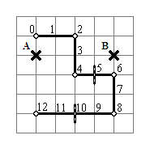
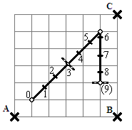
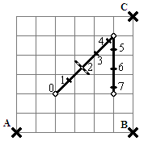

| Source file: | cell.{c, cpp, java} |
| Input file: | cell.in |
Cell phones generally provide service by connecting to a nearby cellular tower. At any given time there may be several towers in range. The cell phone, however, will only connect to the one with the best signal strength. The purpose of this problem is to track a traveler carrying a cell phone. At each mile marker along a road, note which tower the cell phone is using, and report when it is different from the previous marker.
The position of towers will be specified as X-Y coordinates in miles relative to some arbitrary origin. The traveler will travel down a road composed of straight line segments laid end to end. The road will not intersect itself. Assume that there are markers occurring every mile along the road, with mile marker zero being at the starting point. If the road ends at least 0.5 miles past the last mile marker, the end of the road is labeled with the next mile. For instance if the road is 8.6 miles long, the endpoint is labeled as mile 9. If the road is 8.2 miles long, regular mile marker 8 is the last.
If d is the distance to a tower with power p, the signal strength for the tower will be calculated as p / d2, rounded to the nearest integer. A tower will never be placed at the position of a mile marker.
Consider the examples shown in the Figures below. Each shows a road and labeled mile markers and cell towers.
In Figure 1, where the segments of the road all follow the background grid, mile markers come at intersections in the grid. The cell towers A and B are at (1, 4) and (5, 4). Both have power 1,000. At mile markers 0 and 1 the strength of A is greater. At mile markers 2 - 4 the strength of A and B are equal. In such cases you are to note the cell tower with the label closer to the beginning of the alphabet, so it continues to be A. At mile markers 5 - 9 B is stronger. At mile 10 the towers are of equal strength, but the one with first letter is reported, A. Tower A remains strongest to the end. The long crossbars show the mile markers where the reported strongest tower is different than at the previous marker.
|  |  |  |
| Figure 1 | Figure 2 | Figure 3 |
The example in Figure 2 has three towers: A at (0, 0) and C at (6, 6), both with power 1,000, while tower B at (6, 0) has a power of 600. The mile markers are at the tick marks. They show the traveler's progression along the road. The mile markers are no longer at grid intersections because of the angled road. Initially tower A is the strongest. Tower C is strongest at mile markers 3 - 8. The end of the road at (5, 2) is more than a half mile from mile 8, so it is labeled as mile 9. At the endpoint, B is strongest, unlike at mile 8, so a report is made for the endpoint.
Figure 3 is similar to Figure 2, except it shifts the beginning of the road and changes the power of cell tower B to 300. Tower A starts as the strongest, and then at mile markers 2 - 7 tower C is strongest. The endpoint at (5, 2) is not considered, since it is less than .5 miles from mile marker 7, even though tower B is strongest at this endpoint.
Input: The input consists of at least one data set, followed by a line containing only 0.
The first line of a data set contains two space separated integers T R, where
The next T lines each contain three space separated integers representing the X-coordinate, Y-coordinate, and power of one tower, respectively. The towers are implicitly labeled ‘A’, ‘B’, ‘C’, and so on.
The next line contains 2 (R + 1) integers which are the coordinates for the R + 1 points that define the road. The road starts on the first point and moves in straight line segments through all R remaining points.
All coordinates will be integers between 0 and 100, inclusive. No two coordinate pairs are equal. The power for a tower will be an integer between 1 and 1,000,000, inclusive.
Output: There is one line of output for each road in the data set. The line consists of ordered pairs separated by a single space. The first element of a pair is a number representing a mile marker. The second element of the pair is a letter corresponding to the tower with the strongest signal. There are entries for mile 0 and every mile marker where the strongest tower recorded is different than at the previous mile marker. The ordered pairs are surrounded by parentheses, and the elements are separated by a comma, with no whitespace inside the ordered pair.
The sample input data corresponds to the Figures.
| Example input: | Example output: |
| 2 5 1 4 1000 5 4 1000 1 5 3 5 3 3 5 3 5 1 1 1 3 2 0 0 1000 6 0 600 6 6 1000 1 1 5 5 5 2 3 2 0 0 1000 6 0 300 6 6 1000 2 2 5 5 5 2 0 |
(0,A) (5,B) (10,A) (0,A) (3,C) (9,B) (0,A) (2,C) |